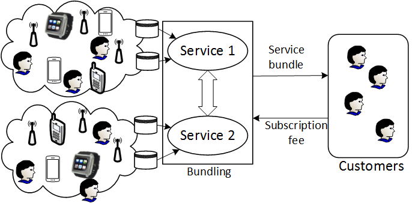
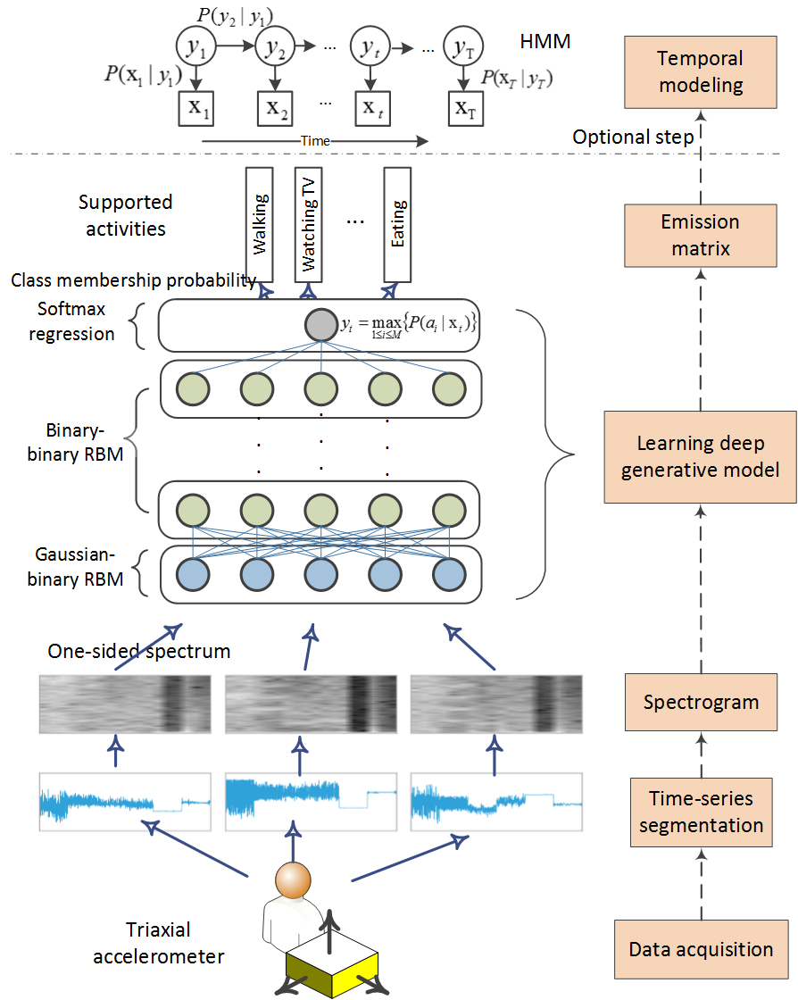
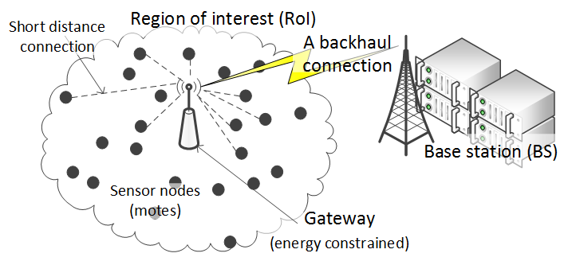

|
Research Projects
My research interests span Internet of Things (IoT), networked systems, and machine learning with a particular focus on people-centric sensing.
With the emerging sensing technologies such as mobile crowdsensing and IoT, people-centric data can be efficiently collected and used for analytics and optimization purposes. This data is typically required to develop and render people-centric services. Users collect sensing data using their personal mobile devices, e.g., mobile phones and IoT gadgets.
Economics of big data
|
 |
In this project, we addressed the privacy implication, optimal pricing, and bundling of people-centric services. We first defined the inverse correlation between the service quality and privacy level from data analytics perspectives. We then presented the profit maximization models of selling standalone, complementary, and substitute services. Specifically, the closed-form solutions of the optimal privacy level and subscription fee were derived to maximize the gross profit of service providers. For interrelated people-centric services, we showed that cooperation by service bundling of complementary services is profitable compared to the separate sales but detrimental for substitutes. We also showed that the market value of a service bundle is correlated with the degree of contingency between the interrelated services.
|
keywords: Optimal pricing, people-centric sensing, privacy preserving data analytics
Papers: IEEE J-SAC 2017, IEEE Communications 2017, IEEE ICC 2016
Deep learning in activity recognition
|
 |
With the proliferation of sensors, such as accelerometers, in mobile devices, activity and motion tracking has become a viable technology to understand and create an engaging user experience. In this project, we showed that deep activity recognition models (a) provide better recognition accuracy of human activities, (b) avoid the expensive design of handcrafted features in existing systems, and (c) utilize the massive unlabeled acceleration samples for unsupervised feature extraction. Moreover, a hybrid approach of deep learning and hidden Markov models (DL-HMM) was presented for sequential activity recognition. This hybrid approach integrates the hierarchical representations of deep activity recognition models with the stochastic modeling of temporal sequences in the hidden Markov models.
|
keywords: Deep learning and hidden Markov model (DL-HMM), sensor-based activity recognition
Papers: IEEE TVT 2016, AAAI 2016, IEEE Network 2016
Data compression in wireless sensor networks (WSNs)
|
 |
In this project, we presented a data compression algorithm with error bound guarantee for WSNs using compressing neural networks. The proposed algorithm minimizes data congestion and reduces energy consumption by exploring spatio-temporal correlations among data samples. The adaptive rate-distortion feature balances the compressed data size (data rate) with the required error bound guarantee (distortion level). This compression relieves the strain on energy and bandwidth resources while collecting the data within tolerable error margins, thereby increasing the scale of WSNs. We showed that the proposed algorithm outperforms several existing WSN data compression methods in terms of compression efficiency and signal reconstruction. Moreover, our energy analysis showed that compressing the data can reduce the energy expenditure, and hence expand the service lifespan by several folds.
|
keywords: Lossy data compression, error bound guarantee, compressing neural networks
Papers: IEEE Sensors 2016, IEEE LCN 2015
|
{kind=link}
{kind=link}
{kind=link}
{kind=link}